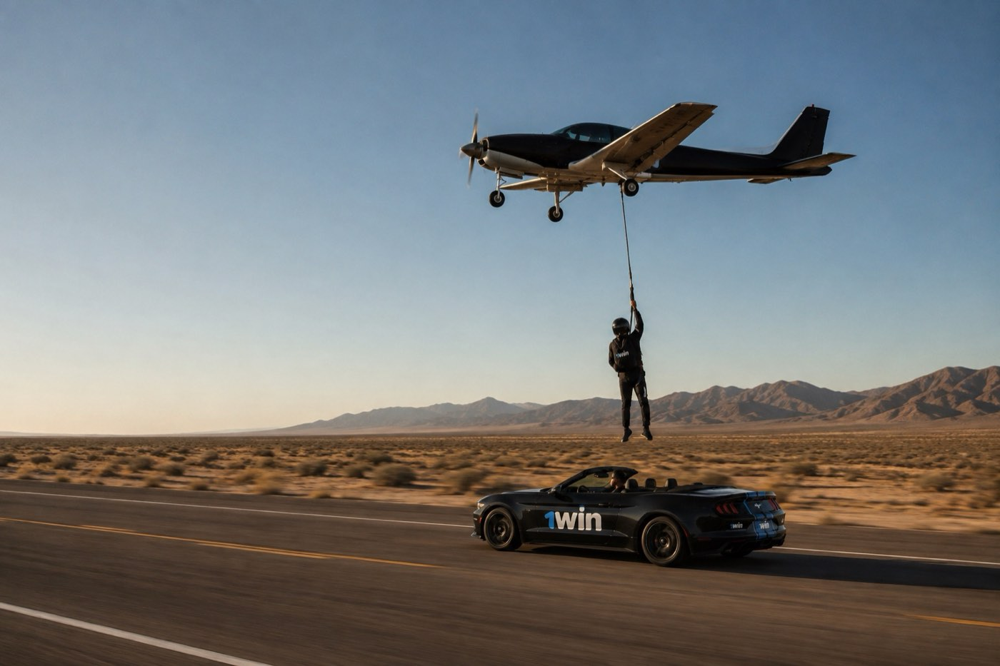
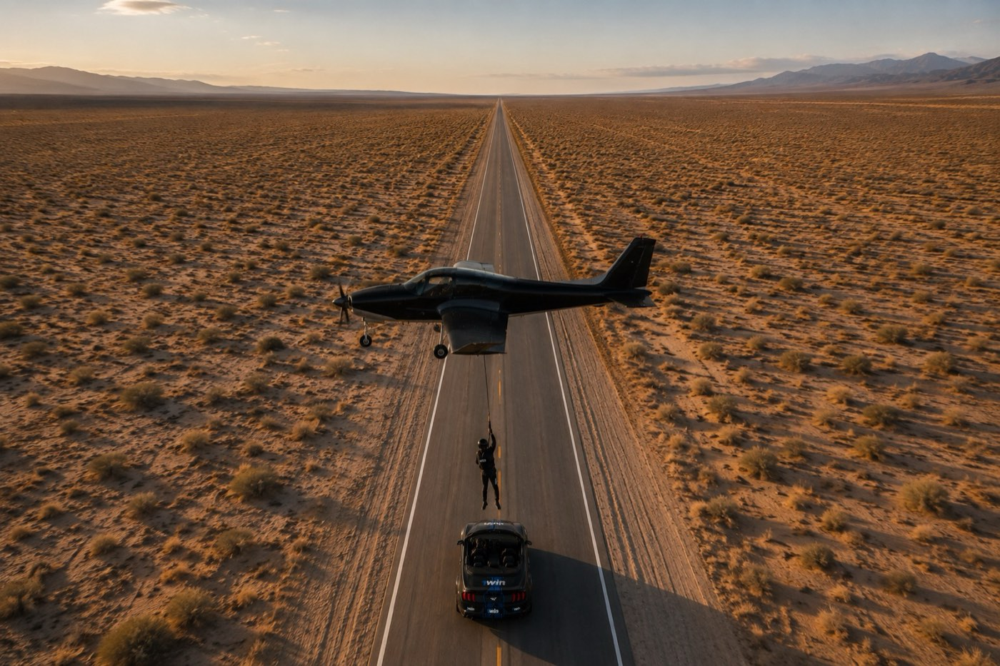
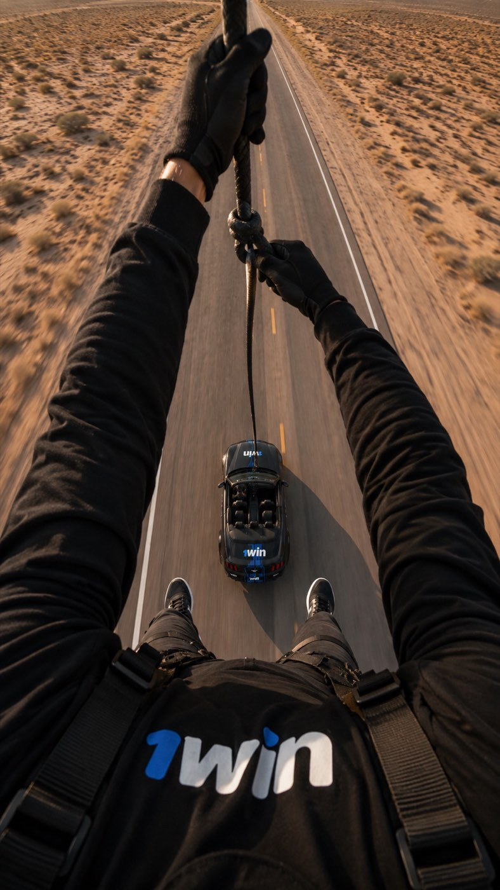
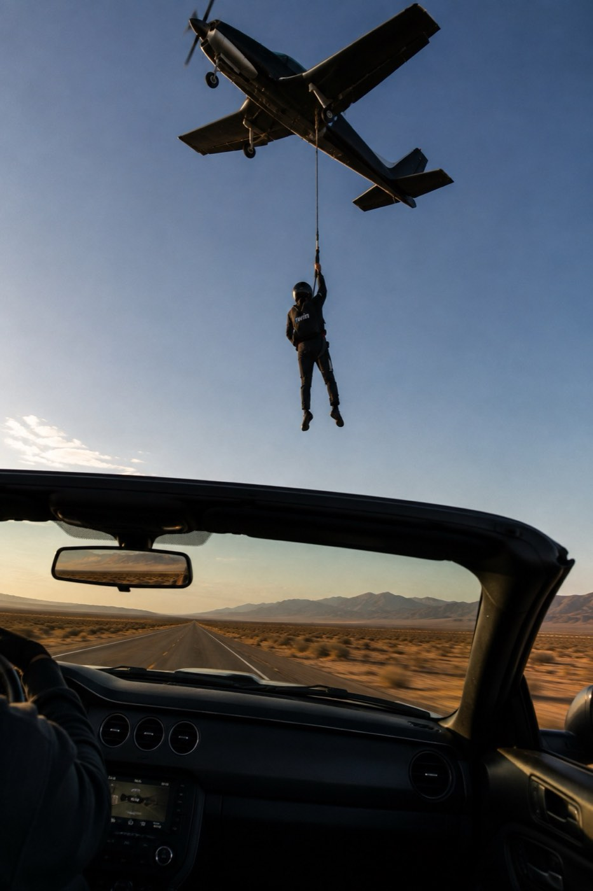

05 — The Creator

Kyle Zellner

A proposal for 1win
Then I cut away from the rope in mid-air and parachute down.
01 — The Stunt
I'm standing up in the back of a moving convertible. A plane comes in low overhead trailing a rope. I catch it, clip it into my harness, and it rips me straight up out of the car — the car keeps driving without me. The plane carries me up to altitude, and then I cut away from the rope, freefall, and open my parachute.
Car to plane to skydive, in one continuous take.
Moving convertible on a closed road, camera car alongside.
The plane passes overhead. I catch the rope and clip in.
The line goes tight and pulls me out of the car into the sky.
I cut away at altitude, freefall, and fly my canopy down.

02 — Branding
03 — Deliverables
The stunt is filmed from four angles at once, and those angles are cut into six finished reels. Every one stands on its own as a post, not six edits of the same clip. I shoot and edit all of them.


All four angles cut together into the hero piece.
Every cut goes out as an Instagram trial first, tested against non-followers before it touches my feed. Six shots at finding the one that breaks out.
The two highest performing trials get posted to my main feed as collabs with 1win — so what my audience sees is the version the algorithm already picked.
Included: 1win gets full access to all footage from the project — edit it, repurpose it, and post it on your own channels. Want to cut your own reels internally? It's all yours.
04 — Budget
Aircraft and pilot, stunt coordinator, safety and jump crew, drone and camera team, vehicles, permits, insurance — through to four finished reels.
05 — The Creator